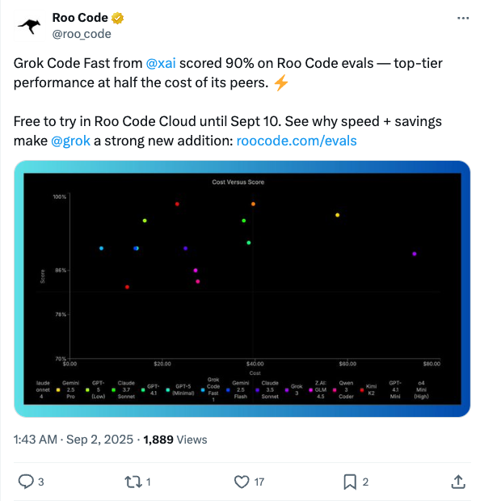
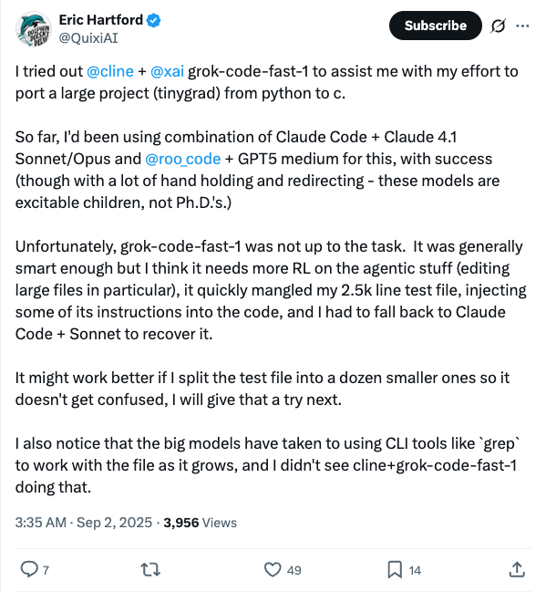
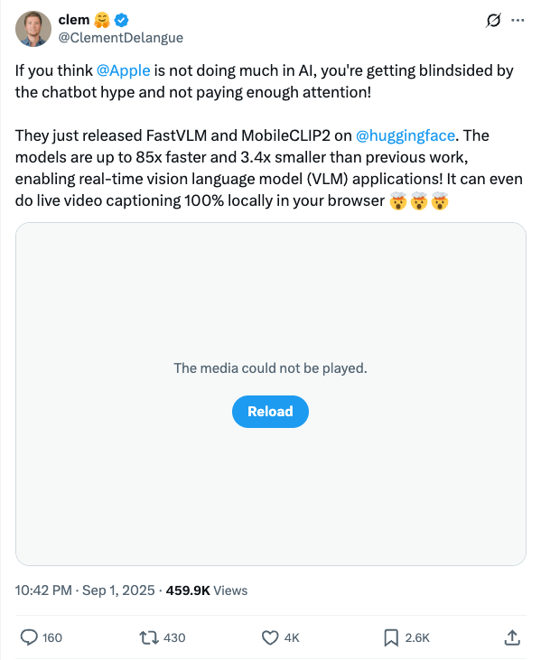
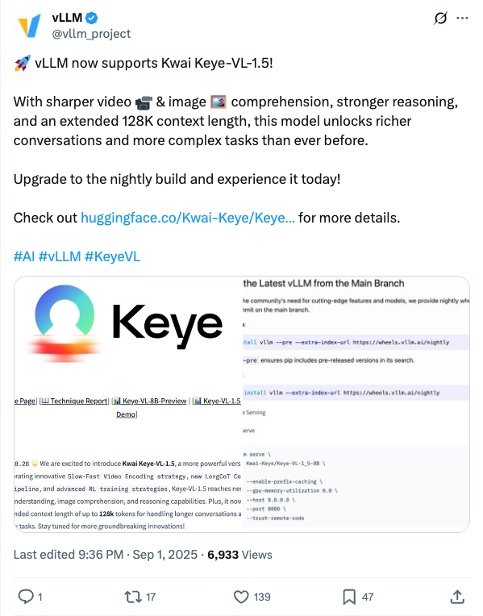
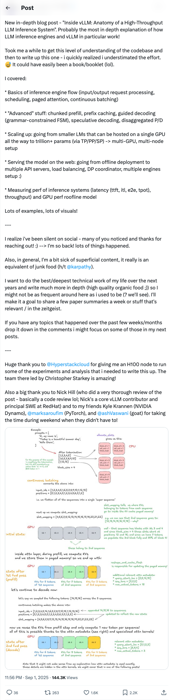
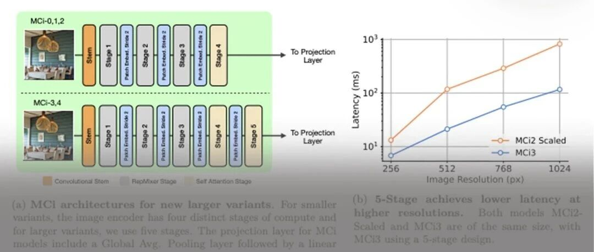
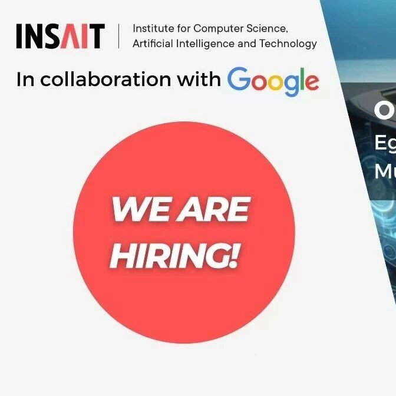
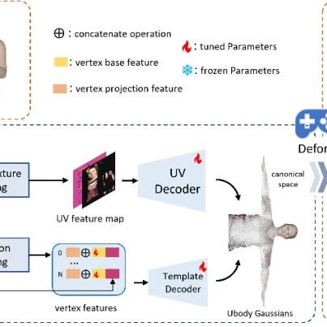
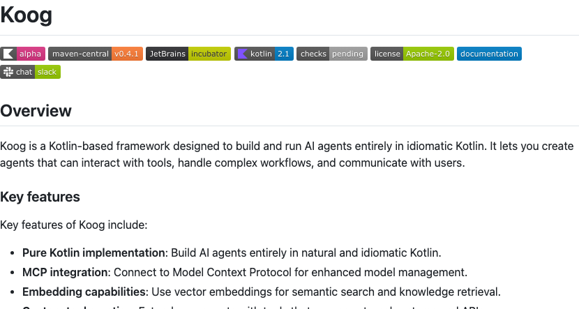
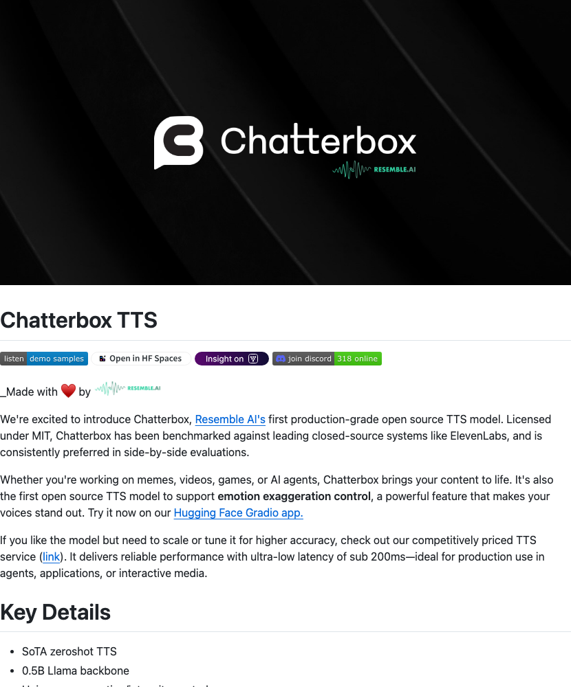

Twitter
roo_code_Grok Code Achieves 90% on Evals, Half Cost, Free Trial
Published: 2025-09-01T17:43:00.000Z

Roo Code announced that XAI's Grok Code achieved an impressive 90% score on Roo Code evaluations, demonstrating top-tier code generation performance at half the cost of its peers. Grok Code is currently available for a free trial on the Roo Code Cloud platform until September 10. This performance highlights Grok's significant advantages in terms of speed and cost-effectiveness, positioning it as a strong new addition in the code development and evaluation domain.
QuixiAI_Evaluating Grok-code-fast-1's Performance in Code Porting
Published: 2025-09-01T19:35:49.000Z

Eric Hartford of QuixiAI tested xAI's grok-code-fast-1 model for porting a Python project (tinygrad) to C. He found the model performed poorly when handling large files, failing to meet expectations and even corrupting test code. Hartford noted that grok-code-fast-1 needs improvement in agentic capabilities and large file editing, suggesting that splitting files might enhance its processing ability in the future. Previously, he had success using Claude and GPT models for similar tasks.
Tim_Dettmers_GLM-4.5 Speed and Performance Review
Published: 2025-09-01T19:50:17.000Z
Tim Dettmers tested GLM 4.5, finding it approximately 3x faster than Claude Code + Opus 4.1 and 5x faster than GPT-5-high, while maintaining performance comparable to closed-source models. He noted that GLM-4.5's speed significantly boosts productivity. Z.ai also announced a GLM Coding Plan to make GLM-4.5 more accessible, priced at one-seventh of the original Claude Code.
ClementDelangue_Apple Releases FastVLM and MobileCLIP2, Advancing AI Vision Language Models
Published: 2025-09-01T14:42:48.000Z

Clement Delangue highlights Apple's ongoing advancements in AI, noting the recent release of FastVLM and MobileCLIP2 models on Hugging Face. These models are up to 85 times faster and 3.4 times smaller than previous work, significantly accelerating the development of real-time Vision Language Model (VLM) applications, including local live video captioning directly in the browser.
vllm_project_vLLM Announces Support for Kwai Keye-VL-1.5 Multimodal Model
Published: 2025-09-01T13:36:11.000Z

The vLLM project announced that its inference framework now supports the Kwai Keye-VL-1.5 multimodal model. This model significantly enhances video and image comprehension capabilities, strengthens reasoning performance, and features an extended 128K context length. These improvements enable richer conversations and more complex task processing. Users can experience this new functionality by upgrading to vLLM's nightly build.
gordic_aleksa_Inside vLLM: Anatomy of a High-Throughput LLM Inference System
Published: 2025-09-01T15:56:37.000Z

Aleksa Gordić has published an in-depth blog post titled "Inside vLLM: Anatomy of a High-Throughput LLM Inference System," detailing the workings of LLM inference engines, particularly vLLM. The article covers fundamental inference engine processes, advanced optimization techniques (e.g., chunked prefill, prefix caching, guided decoding, speculative decoding), multi-GPU/multi-node scaling, and performance measurement. This post aims to provide high-quality, deep technical insights, offering significant value for understanding LLM inference systems.
wechat
DeepSeek Discloses Full Training Details of V3/R1 Models, Revealing Significant Information
Published: 2025-09-01T16:00:30.000Z
DeepSeek has responded to new regulations by announcing that all its AI-generated content will be clearly marked as "AI-generated," prohibiting tampering with these identifiers and the dissemination of false information. Concurrently, DeepSeek has for the first time publicly disclosed the detailed training methodologies for its V3/R1 large models, encompassing pre-training and optimization training phases. The company emphasizes the critical role of high-quality, large-scale data and outlines its robust data governance processes, including filtering harmful content and mitigating biases. Furthermore, DeepSeek elaborated on its model inference mechanisms, open-source strategy, and approaches to address "hallucination" issues. The company also detailed multiple stringent measures concerning privacy protection, data security, and content safety, such as granting users rights to information, choice, and control. This comprehensive disclosure underscores DeepSeek's commitment to ethical AI development and practical safety implementations.
ICCV 2025 | DescriptiveEdit: Nanjing University and vivo Introduce a New Paradigm for Semantic Image Editing with Descriptive Instructions
Published: 2025-09-01T16:00:30.000Z
Nanjing University and vivo have jointly released DescriptiveEdit, a novel framework addressing the limitations of traditional instruction-based image editing, particularly concerning expressiveness, generalization, and fine-grained control. This innovative approach redefines the editing pipeline as "instruction → editing description → edited image," or directly utilizes user-provided descriptions. Key technical advancements include the introduction of an Attention Bridge for efficient reference image control and an adaptive attention fusion mechanism with a learnable linear layer, which optimally balances generation quality with reference fidelity. DescriptiveEdit demonstrates superior performance in both instruction adherence and image consistency. Furthermore, its seamless compatibility with existing community extensions establishes a new, extensible, and plug-and-play paradigm for semantic image editing, significantly enhancing the practical utility and flexibility of image manipulation.
Apple Releases MobileCLIP2: The Strongest Mobile CLIP, Open-Sourcing Data Generation Code!
Published: 2025-09-01T14:01:34.000Z

Apple has unveiled MobileCLIP2, marking a significant advancement in lightweight multimodal models specifically designed for mobile devices. This new iteration achieves state-of-the-art (SOTA) performance in zero-shot classification and various downstream tasks by leveraging a meticulously optimized training methodology. Key innovations include the development of the DFNDR enhanced training scheme, which refines the selection and utilization of datasets, improves the efficacy of teacher models, and enhances synthetic caption generation for robust data augmentation. Furthermore, MobileCLIP2 introduces a novel S3/S4 architecture, featuring a 5-stage image encoder, specifically engineered for superior efficiency and scalability. These comprehensive advancements enable MobileCLIP2 to deliver significantly improved performance with remarkably low latency, thereby expanding the possibilities for sophisticated multimodal applications on resource-constrained mobile platforms. The research also notably includes the open-sourcing of its data generation code, fostering further development and accessibility within the AI community.
PhD Application | Cutting-edge Research Project Jointly Supervised by INSAIT and Google: Egocentric Vision Research Based on Multimodal Large Models
Published: 2025-09-01T14:01:34.000Z

INSAIT is globally recruiting PhD candidates for a cutting-edge research project, jointly funded and supervised by Google, focusing on advancing Egocentric Vision research using Multimodal Large Language Models (MLLMs). This initiative aims to develop AI systems capable of real-time perception, memory, and reasoning, leading to adaptive, context-aware agents that can more naturally understand and interact with first-person video content generated by increasingly prevalent smart glasses and AR/VR headsets. The project addresses the growing importance of comprehending egocentric video data as wearable devices proliferate. Candidates will receive joint guidance from leading experts at INSAIT and Google Zurich, including prominent figures in computer vision. This collaborative effort seeks to push the boundaries of AI's ability to interpret human-perspective data, tackling new challenges posed by the widespread adoption of wearable technology.
ICCV 2025 | GUAVA—Single-Image Creation of Drivable Upper-Body 3D Avatars! Real-time, Efficient, Capturing Delicate Facial Expressions and Gestures
Published: 2025-09-01T14:01:34.000Z

The latest research introduces GUAVA, the first framework for creating drivable upper-body 3D Gaussian avatars from a single image, addressing limitations of existing methods in real-time performance, efficiency, and expression capture. This innovative framework incorporates the Expressive Human Model (EHM) and inverse texture mapping techniques, utilizing a dual-branch model to achieve reconstruction in seconds and real-time animation rendering. Experimental results demonstrate that GUAVA significantly outperforms current 2D and 3D methods in rendering quality and efficiency, excelling particularly in identity consistency, facial expression, and gesture capture. This breakthrough offers an efficient and realistic virtual avatar solution for applications in film, gaming, and virtual conferencing, pushing the boundaries of single-image 3D avatar generation.
Meituan's First Open-Source Large Model, Longcat-Flash-Chat, Matches DeepSeek-V3.1
Published: 2025-09-01T04:36:57.000Z

Meituan has officially open-sourced its inaugural large model, Longcat-Flash-Chat, a 560B Mixture-of-Experts (MoE) architecture. This model has achieved remarkable performance, notably matching or even exceeding leading models like DeepSeek-V3.1 and Claude4 Sonnet in critical benchmarks such as agent tool invocation, instruction adherence, and programming proficiency. Longcat-Flash-Chat integrates advanced technical innovations, including "Zero-computation Experts" and a Shortcut-connected MoE design, which collectively boost training and inference throughput while maintaining a comparatively smaller parameter count. This significant open-source release underscores Meituan's substantial advancements in large model technology. It also marks a pivotal moment in the company's strategic evolution, transitioning from its traditional image as a "delivery company" to a formidable technology-driven enterprise. Meituan's sustained commitment to research and development, coupled with a well-defined AI strategy, aims to seamlessly integrate cutting-edge AI capabilities into diverse business applications and scenarios.
GitHub
Koog
Published: 2025-09-01T15:26:27Z

Koog is a robust Kotlin-based framework for developing and deploying AI agents, emphasizing a pure, idiomatic Kotlin implementation. It empowers developers to create sophisticated agents capable of interacting with external tools, orchestrating complex workflows, and engaging in dynamic user communications. Core functionalities include seamless MCP integration, advanced embedding capabilities for knowledge retrieval, flexible custom tool creation, and intelligent history compression for token optimization. The framework also offers a powerful streaming API, persistent agent memory, and comprehensive tracing for debugging. With its scalable, modular, and multiplatform architecture (JVM, JS, WasmJS, iOS), Koog supports a broad spectrum of LLM providers such as Google, OpenAI, and Anthropic, making it ideal for applications ranging from basic chatbots to complex enterprise solutions.
Welcome to Activepieces
Published: 2025-09-02T01:40:43Z

Activepieces is an open-source AI automation platform designed as a replacement for Zapier, offering robust workflow automation capabilities. Built with TypeScript, it boasts high extensibility through a type-safe "pieces" framework. The platform integrates over 280 open-source components, with 60% contributed by the community. It features native AI capabilities, allowing users to experiment with various AI providers or build custom AI agents. Activepieces provides an intuitive no-code builder while also supporting code-based development. It includes enterprise-ready features such as self-hosting, data security control, full versioning, multi-language support, and human-in-the-loop processes. It is an AI-first automation solution suitable for both technical and non-technical users.
Fooocus
Published: 2025-01-24T10:55:35Z
Fooocus is an open-source, offline image generation software built on Gradio, designed to simplify the creative process by allowing users to focus solely on prompts for high-quality image output. Based on the Stable Diffusion XL architecture, it offers a Midjourney-like experience without the need for extensive parameter tuning. Key features include a GPT-2 based prompt processing engine, advanced sampling techniques, and custom inpaint/image prompt algorithms. With a minimal requirement of 4GB Nvidia GPU memory and a streamlined installation, Fooocus aims to provide an efficient and high-quality AI painting solution.
HumanLayer
Published: 2025-09-01T19:50:19Z

HumanLayer is a crucial toolkit addressing the inherent safety and reliability concerns of Large Language Models (LLMs) when interacting with high-stakes functions. It introduces deterministic human oversight mechanisms, ensuring that critical operations are always subject to human approval, even if the LLM generates errors or hallucinates. This capability is vital for deploying AI agents in sensitive environments where "90% accuracy" is insufficient. HumanLayer facilitates the creation of next-generation autonomous agents that can safely perform high-value tasks like updating private data or communicating on behalf of a company. By embedding a human-in-the-loop directly into the tool/function, HumanLayer automates complex workflows while maintaining essential human control, thereby significantly enhancing the trustworthiness and practical utility of advanced AI applications in real-world, high-impact scenarios.
Chatterbox TTS
Published: 2025-08-01T10:22:29Z

Chatterbox, Resemble AI's inaugural production-grade open-source Text-to-Speech (TTS) model, is released under an MIT license. This advanced model has demonstrated superior performance in side-by-side evaluations against prominent closed-source systems such as ElevenLabs. A groundbreaking feature is its unique emotion exaggeration control, allowing users to infuse voices with distinct expressiveness. Architected with a 0.5B Llama backbone and rigorously trained on 0.5 million hours of cleaned data, Chatterbox delivers state-of-the-art zeroshot TTS capabilities, ensuring ultra-stable and alignment-informed inference. Furthermore, it integrates built-in PerTh watermarking for responsible AI usage. Chatterbox is highly versatile, suitable for a wide array of applications including memes, videos, games, and AI agents, effectively bringing digital content to life with high-fidelity, controllable speech synthesis.
MiniCPM-V
Published: 2025-09-02T04:16:14Z

The MiniCPM-V and MiniCPM-o series represent a significant advancement in efficient end-side multimodal large language models (MLLMs), specifically optimized for powerful single-image, multi-image, and high-frame-rate video understanding on mobile devices. MiniCPM-V 4.5, with its 8 billion parameters, demonstrates performance that surpasses leading proprietary models like GPT-4o, Gemini-2.0 Pro, and Qwen2.5-VL 72B in vision-language tasks. Key innovations include a 96x video token compression rate for efficient long video understanding, controllable hybrid fast/deep thinking modes, and robust OCR capabilities for complex document parsing. MiniCPM-o 2.6 extends this by integrating audio input and high-quality speech output, facilitating end-to-end real-time voice conversations with configurable voices and enabling multimodal live streaming on edge devices such as iPads. This series prioritizes both strong performance and efficient deployment, establishing itself as a cutting-edge open-source solution for on-device multimodal AI applications.
huggingface
R-4B: Incentivizing General-Purpose Auto-Thinking Capability in MLLMs
via Bi-Mode Annealing and Reinforce Learning
Published: 2025-08-28T17:48:19.000Z

Multimodal Large Language Models (MLLMs) equipped with step-by-step thinking
capabilities have demonstrated remarkable performance on complex reasoning
problems. However, this thinking process is redundant for simple problems
solvable without complex reasoning. To address this inefficiency, we propose
R-4B, an auto-thinking MLLM, which can adaptively decide when to think based on
problem complexity. The central idea of R-4B is to empower the model with both
thinking and non-thinking capabilities using bi-mode annealing, and apply
Bi-mode Policy Optimization~(BPO) to improve the model's accuracy in
determining whether to activate the thinking process. Specifically, we first
train the model on a carefully curated dataset spanning various topics, which
contains samples from both thinking and non-thinking modes. Then it undergoes a
second phase of training under an improved GRPO framework, where the policy
model is forced to generate responses from both modes for each input query.
Experimental results show that R-4B achieves state-of-the-art performance
across 25 challenging benchmarks. It outperforms Qwen2.5-VL-7B in most tasks
and achieves performance comparable to larger models such as
Kimi-VL-A3B-Thinking-2506 (16B) on reasoning-intensive benchmarks with lower
computational cost.
A Survey of Scientific Large Language Models: From Data Foundations to
Agent Frontiers
Published: 2025-08-28T18:30:52.000Z

Scientific Large Language Models (Sci-LLMs) are transforming how knowledge is
represented, integrated, and applied in scientific research, yet their progress
is shaped by the complex nature of scientific data. This survey presents a
comprehensive, data-centric synthesis that reframes the development of Sci-LLMs
as a co-evolution between models and their underlying data substrate. We
formulate a unified taxonomy of scientific data and a hierarchical model of
scientific knowledge, emphasizing the multimodal, cross-scale, and
domain-specific challenges that differentiate scientific corpora from general
natural language processing datasets. We systematically review recent Sci-LLMs,
from general-purpose foundations to specialized models across diverse
scientific disciplines, alongside an extensive analysis of over 270
pre-/post-training datasets, showing why Sci-LLMs pose distinct demands --
heterogeneous, multi-scale, uncertainty-laden corpora that require
representations preserving domain invariance and enabling cross-modal
reasoning. On evaluation, we examine over 190 benchmark datasets and trace a
shift from static exams toward process- and discovery-oriented assessments with
advanced evaluation protocols. These data-centric analyses highlight persistent
issues in scientific data development and discuss emerging solutions involving
semi-automated annotation pipelines and expert validation. Finally, we outline
a paradigm shift toward closed-loop systems where autonomous agents based on
Sci-LLMs actively experiment, validate, and contribute to a living, evolving
knowledge base. Collectively, this work provides a roadmap for building
trustworthy, continually evolving artificial intelligence (AI) systems that
function as a true partner in accelerating scientific discovery.
Droplet3D: Commonsense Priors from Videos Facilitate 3D Generation
Published: 2025-08-28T06:39:41.000Z

Scaling laws have validated the success and promise of large-data-trained
models in creative generation across text, image, and video domains. However,
this paradigm faces data scarcity in the 3D domain, as there is far less of it
available on the internet compared to the aforementioned modalities.
Fortunately, there exist adequate videos that inherently contain commonsense
priors, offering an alternative supervisory signal to mitigate the
generalization bottleneck caused by limited native 3D data. On the one hand,
videos capturing multiple views of an object or scene provide a spatial
consistency prior for 3D generation. On the other hand, the rich semantic
information contained within the videos enables the generated content to be
more faithful to the text prompts and semantically plausible. This paper
explores how to apply the video modality in 3D asset generation, spanning
datasets to models. We introduce Droplet3D-4M, the first large-scale video
dataset with multi-view level annotations, and train Droplet3D, a generative
model supporting both image and dense text input. Extensive experiments
validate the effectiveness of our approach, demonstrating its ability to
produce spatially consistent and semantically plausible content. Moreover, in
contrast to the prevailing 3D solutions, our approach exhibits the potential
for extension to scene-level applications. This indicates that the commonsense
priors from the videos significantly facilitate 3D creation. We have
open-sourced all resources including the dataset, code, technical framework,
and model weights: https://dropletx.github.io/.
A.S.E: A Repository-Level Benchmark for Evaluating Security in
AI-Generated Code
Published: 2025-08-25T15:11:11.000Z

The increasing adoption of large language models (LLMs) in software
engineering necessitates rigorous security evaluation of their generated code.
However, existing benchmarks are inadequate, as they focus on isolated code
snippets, employ unstable evaluation methods that lack reproducibility, and
fail to connect the quality of input context with the security of the output.
To address these gaps, we introduce A.S.E (AI Code Generation Security
Evaluation), a benchmark for repository-level secure code generation. A.S.E
constructs tasks from real-world repositories with documented CVEs, preserving
full repository context like build systems and cross-file dependencies. Its
reproducible, containerized evaluation framework uses expert-defined rules to
provide stable, auditable assessments of security, build quality, and
generation stability. Our evaluation of leading LLMs on A.S.E reveals three key
findings: (1) Claude-3.7-Sonnet achieves the best overall performance. (2) The
security gap between proprietary and open-source models is narrow;
Qwen3-235B-A22B-Instruct attains the top security score. (3) Concise,
``fast-thinking'' decoding strategies consistently outperform complex,
``slow-thinking'' reasoning for security patching.
Think in Games: Learning to Reason in Games via Reinforcement Learning
with Large Language Models
Published: 2025-08-29T07:13:39.000Z

Large language models (LLMs) excel at complex reasoning tasks such as
mathematics and coding, yet they frequently struggle with simple interactive
tasks that young children perform effortlessly. This discrepancy highlights a
critical gap between declarative knowledge (knowing about something) and
procedural knowledge (knowing how to do something). Although traditional
reinforcement learning (RL) agents can acquire procedural knowledge through
environmental interaction, they often operate as black boxes and require
substantial training data. In contrast, LLMs possess extensive world knowledge
and reasoning capabilities, but are unable to effectively convert this static
knowledge into dynamic decision-making in interactive settings. To address this
challenge, we propose Think in Games (TiG), a novel framework that empowers
LLMs to develop procedural understanding through direct interaction with game
environments, while retaining their inherent reasoning and explanatory
abilities. Specifically, TiG reformulates RL-based decision-making as a
language modeling task: LLMs generate language-guided policies, which are
refined iteratively through online reinforcement learning based on
environmental feedback. Our experimental results show that TiG successfully
bridges the gap between declarative and procedural knowledge, achieving
competitive performance with dramatically lower data and computational demands
compared to conventional RL methods. Moreover, TiG provides step-by-step
natural language explanations for its decisions, greatly improving transparency
and interpretability in complex interactive tasks.
UItron: Foundational GUI Agent with Advanced Perception and Planning
Published: 2025-08-29T16:40:57.000Z

GUI agent aims to enable automated operations on Mobile/PC devices, which is
an important task toward achieving artificial general intelligence. The rapid
advancement of VLMs accelerates the development of GUI agents, owing to their
powerful capabilities in visual understanding and task planning. However,
building a GUI agent remains a challenging task due to the scarcity of
operation trajectories, the availability of interactive infrastructure, and the
limitation of initial capabilities in foundation models. In this work, we
introduce UItron, an open-source foundational model for automatic GUI agents,
featuring advanced GUI perception, grounding, and planning capabilities. UItron
highlights the necessity of systemic data engineering and interactive
infrastructure as foundational components for advancing GUI agent development.
It not only systematically studies a series of data engineering strategies to
enhance training effects, but also establishes an interactive environment
connecting both Mobile and PC devices. In training, UItron adopts supervised
finetuning over perception and planning tasks in various GUI scenarios, and
then develop a curriculum reinforcement learning framework to enable complex
reasoning and exploration for online environments. As a result, UItron achieves
superior performance in benchmarks of GUI perception, grounding, and planning.
In particular, UItron highlights the interaction proficiency with top-tier
Chinese mobile APPs, as we identified a general lack of Chinese capabilities
even in state-of-the-art solutions. To this end, we manually collect over one
million steps of operation trajectories across the top 100 most popular apps,
and build the offline and online agent evaluation environments. Experimental
results demonstrate that UItron achieves significant progress in Chinese app
scenarios, propelling GUI agents one step closer to real-world application.